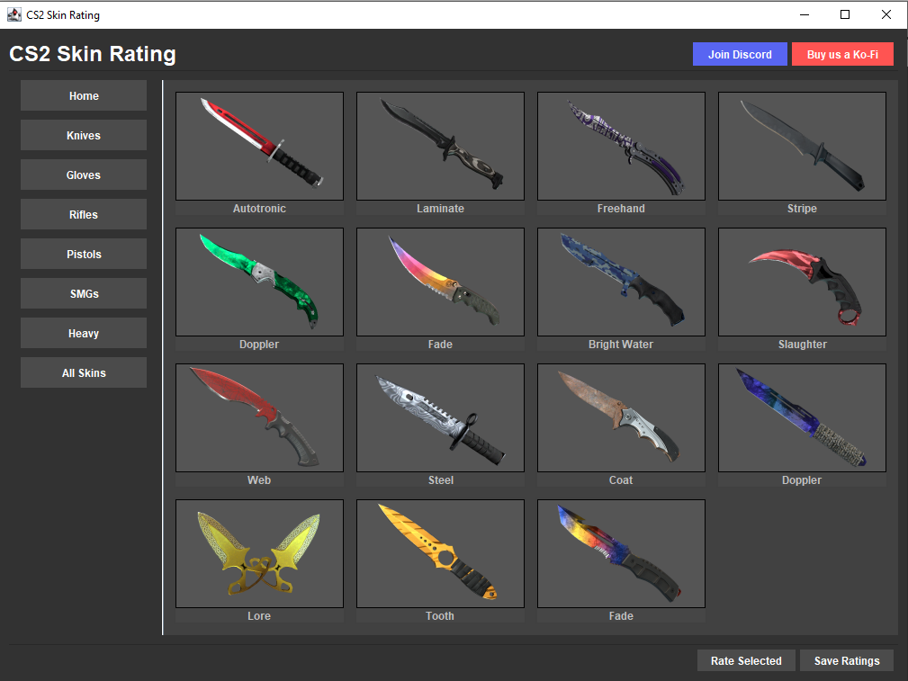

Back to Projects
SwingGUI
SwingGUI is a Java Swing application designed to display and allow users to rate CS2 (Counter-Strike 2) weapon skins. The project demonstrates key Object-Oriented Programming (OOP) principles—including inheritance, encapsulation, abstraction, polymorphism, and composition—through a modular, dark-themed graphical user interface with navigation, card-based skin display, and rating features.
Tech Stack:
Source Code
